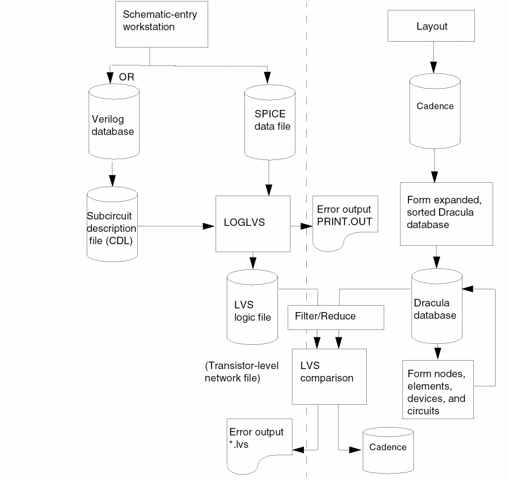

5
Compiling Network Descriptions (LOGLVS)
The main focus of Chapter 5 is on LOGLVS in Dracula. It covers the following:
- “Overview”
- “Preparing Netlists”
- “LOGLVS Command Sequence”
- “CDL Control Commands”
- “SPICE and HSPICE Commands”
- “Preparing Data Files”
- “Running LOGLVS”
- “Using Hierarchical LOGLVS”
- “LOGLVS Examples”
Overview
To run an LVS comparison, you must convert a schematic netlist into a transistor-level network data file. You can use LOGLVS to convert many different database formats, as shown in the LVS flow diagram on the following page.
LOGLVS compiles the logic network data, expands the macros, and integrates the circuit definition with the logic network data.
A logic schematic is concerned only with an element’s logical function–NAND, NOR, AND, OR, and so forth—not with how this function is implemented in transistors. Therefore, the schematic does not provide enough information to perform a consistency check on gates that have the same logic function but different implementations. To solve this problem, Dracula reads a subcircuit description data file you create with the Circuit Description Language (CDL) described in the
When LOGLVS integrates a circuit definition with logic network data, it produces transistor-level network data. Each type of primitive logic element must have a corresponding subcircuit description definition. Logic elements with the same name and the same number of inputs and outputs, but with different implementations, require different CDL definitions. CDL uses the name extension to accomplish this. If a logic element does not have a CDL description, it is treated as a box with a logic meaning.
Dracula compares the elements in the logic schematic with the elements in the circuit library. If both name extensions and I/O counts match, Dracula expands the logic element into transistors. After checking and expanding all logic elements in the schematic, Dracula creates an LVS logic file. This file is also known as the transistor-level network file, although it can contain a non-transistor box.
Dracula also expands SPICE data files into transistor-level network files for LVS comparison. The line length is limited to 128 characters, and the module/signal/instance name length is limited to 80 characters.
Note:- To turn on MULTIPLE-DISK mode, you only need to specify MDISKIO.TAB in the LOGLVS run directory.
-
In Dracula 4.81 and subsequent versions there is no maximum limit currently to the number of commands in LOGLVS. LOGLVS writes the commands into
JOURNAL.LGSdirectly. The only limitation is that the size ofJOURNAL.LGScannot be larger than your system’s default file size.

Initial Correspondence Nodes
LVS requires some initial correspondence node pairs for comparison. Dracula checks the names from the layout and the network to find the initial correspondence pairs. Each network description language has its own way of specifying initial correspondence nodes. The following table summarizes the node names for each data description format.
| Node names | Definitions | |
|---|---|---|
|
VCC and VDD are keywords for power |
||
Node Names
After macro expansion, each node has a new name inside the macro. LOGLVS uses the following format for a node name or cell designator in a logic-level or circuit-level network:
name1-name2-name3...-namen
Highest level module designator
Lowest level node name or designator
LOGLVS uses the following format for the expansion of a SPICE element name:
Mnum1Xnum2...Xnumn
Subcircuit element names of the subcircuit call listed in the reverse order of the hierarchy
For example, the logic network has an element A1-1 as follows:
Dracula expands the node name P1 in BOX3 as follows:
A1-1-Q1-P1
If the preceding figure is a SPICE subcircuit, Dracula expands the name of the element MP1 as follows:
MP1X02X01
The LVS error report uses the schematic node name. LOGLVS creates the IMAGE.LIS file, which stores the node name directory.
Preparing Netlists
LVS can use a variety of netlists. However, a logic simulator netlist describes only an element’s logical function (NAND, NOR, and so forth) and not the transistors that make up the logic symbol. Therefore, you must also provide a SPICE or CDL file that describes, at the transistor level, what comprises the logical elements (primitives). LOGLVS uses both of these files to create a transistor-level netlist for LVS.
Every type of primitive logic element called by the schematic netlist must have a corresponding subcircuit definition in SPICE or CDL format. Logic elements with the same name and the same number of inputs and outputs, but with different implementations, must have different subcircuit definitions. You can either use a different name or use the name extension feature available in CDL.
LOGLVS accepts CDL netlist files in random .SUBCKT order.
The CDL format is a subset of the SPICE format but differs from it in the following ways:
- You can use both node names and node numbers.
- When defining MOS devices, you must give all four terminals (source, gate, drain, and substrate).
To run LVS successfully, you must make minor additions to the basic SPICE or CDL subcircuit netlist.
LOGLVS For Analog or RF Designs
In this release and subsequent releases, LOGLVS can read the netlist with primitive devices defined in instance forms and LOGLVS can also store parameters for box elements. You usually use these two features in Analog or Radio Frequency (RF) designs. You can use box elements to specifically describe the inductor or other design components in the netlist.
Instance Primitive Device Example
Given below is an example netlist with instance primitive devices.
.SUBCKT nmos_rf d g s b
.ENDS
.SUBCKT TEST1_N S_B D G
X1 D G S_B S_B nmos_rf wr=2.5e-06 lr=1.8e-07 nr=4
.ENDS
The subckt nmos_rf represents an NMOS device in the RF design. You use an empty .SUBCKT to define the NMOS device. You use a .SUBCKT call (X1) to instantiate an instance of this device. Refer to the
The following shows an example to define a box element (an inductor element) in the CDL netlist.
.SUBCKT spiral_rad T1 T2
.ENDS
.SUBCKT TEST1 P1 P2 P3 P4
X2 P1 P2 spiral_rad nr=4.5 rad=6e-05 w=1.5e-05 s-1.5e-06
.ENDS
You use an empty .SUBCKT definition to define a box element. You use an empty .SUBCKT call (X2) to instantiate an instance of the element. You can specify parameters for instances of a box element. In the above example, nr, rad, w, and s are parameters.
LOGLVS can store parameters of a box element instance for the Dracula LVS parameter comparison. The order of the parameters and the number of parameters for instances of the same primitive device types need not be the same. However, the number and order of the parameters for box elements should be the same. The maximum number of parameters is limited to 5.
For the parameter comparison of box elements, refer to the PAR-COMPARE command in the “Description Block Commands” chapter.
LOGLVS Command Sequence
This section describes the LOGLVS commands and shows examples for using them in different types of netlists.
LOGLVS commands can be grouped into the following categories:
For some commands, the order is important. If you specify commands in the wrong order, Dracula issues a warning message.
Control Commands
Control commands are optional and must appear at the beginning of the netlist.
Turns on case sensitivity. You must specify this command to invoke case sensitivity.
Allocates virtual memory for resistor shortages
Turns on explicit pin assignment and implicit floating pin handling.
Suppresses the filtering of floating nodes in cell instances when running in composite mode.
Generates EXPELE.LIS/EXPELE.CEL
Generates Dracula Interactive files
Suppresses warning messages from LOGLVS on non-global names which are "re-equived", for example *.EQUIV P=pch P=p5v.
<filename> Generates pin order file to be used in QRC. Default filename is PINORDER.TXT but you may change the name by specifying filename. For example, PINORDER my_pin_ord
Parse Commands
To parse the netlist, you must specify parse commands.
Compiles library produced by VAN (Verilog Analyzer)
Drops netlist statements from all Hcells. Works only in composite mode for SPICE files.
Expand or Flatten Commands
Expand or flatten commands are required and let you expand or flatten the netlist from the parsed result for the primary cell.
Generates a 6GPADS.DATA file and must precede the CONV command
Expands the logic network. For VERILOG netlists only.
Converts logic network into a LVSLOGIC.DAT file.
Prints the ELEMENT summary by types and must follow the CONV command
LOGLVS Examples
LOGLVS !<<
TRANS 200000
RESI 30000
DXF
CELL cell.tab ;necessary if running cell mode. Use the
;CELL/bbox command if running composite
;mode.
CIR cdl ;parse CDL netlist first
CON top
X
!
Verilog example (Assuming that line "define mylib lib_dir" exists in file cds.lib and directory lib_dir exists):
van -lib mylib Verilog.net
LOGLVS !<<
CASE ;VAN is case-sensitive
CELL cell.tab ;necessary if running cell mode. Use the
;CELL/bbox command if running composite
;mode.
CIR cdl ;parse CDL netlist
NVER mylib top_cell ;parse Verilog netlist
CON
SUM
X
!
CDL Control Commands
You can add commands to the CDL netlist that can be read by Dracula software but not by the simulator.
-
Use an asterisk (*) preceding a command to specify a line to be read by Dracula but not by the circuit simulator.
- In basic element definition use a dollar sign ($) preceding a field to specify a field to be read by Dracula but not by the circuit simulator.
- In subcircuit headers and in subcircuit calls use a dollar sign after a space character ( $) to mark the beginning of a comment.
- Use a dollar sign ($) preceding a command to indicate that the line is a comment, and Dracula ignores the line.
*.BIPOLAR
*.BIPOLAR
Description
Preserves and compares any analog elements coded in the netlist (capacitors, diodes, and resistors). If you do not use the *.BIPOLAR command, LOGLVS ignores all resistors, capacitors, and diodes.
When you use *.BIPOLAR, use the *.CAPA command to tell Dracula to ignore capacitors. Use *.DIODE to tell Dracula to ignore diodes.
To cause Dracula to ignore resistors, use the *.RESI command and specify a threshold resistance below the resistors you want Dracula to ignore. This effectively “shorts” the resistor nodes.
When you use the *.BIPOLAR command, Dracula checks only the connectivity of capacitors, diodes, and resistors. Dracula does not check their size parameters unless you specify in the netlist, respectively,
*.RESVAL or *.RESSIZE *.CAPVAL or *.CAPAREA *.DIOAREA *.DIOPERI
If you use the RESVAL command in the netlist file, you cannot also use the RESSIZE command in the netlist. Likewise, if you use the CAPVAL command, you cannot also use the CAPAREA command.
Be sure your rules file checks for parameter mismatches for each device. Dracula either checks for all resistance mismatches or for width/length mismatches. However, Dracula cannot check for both of these simultaneously.
*.BUSDELIMITER
*.BUSDELIMITER delimiterChar
Description
Specifies delimiter characters for pins in a bus in CDL. Pins in a bus must be grouped together in ascending or descending order in CDL. The order of the net connection to its corresponding pin is determined by its position in the .SUBCKT statement. For example, a RAM cell is defined in CDL as follows:
.SUBCKT RAM A[0] A[1] B C[8] C[7]
The reference for the RAM cell in Verilog is as follows:
MODULE TOP (CLK,IN,...
INPUT [1:2] CLK;
INPUT [1:0] IN;
...
RAM XR1 (.B(net78), .C(CLK), .A(IN));
The pin C[8] of instance XR1 is connected to CLK[1].
The pin C[7] of instance XR1 is connected to CLK[2].
The pin A[0] of instance XR1 is connected to IN[1].
The pin A[1] of instance XR1 is connected to IN[0].
The *.BUSDELIMITER command tells LOGLVS what bus delimiter to look for in CDL files so that LOGLVS correctly matches the CDL definition and its corresponding Verilog reference.
Arguments
The delimiter can be one of the following: a bracket ([), a less than sign (<), a curly bracket ({), or an underscore (_). Specify only the leftmost character with the *.BUSDELIMITER command.
Example
The following example specifies a bracket ( [ ) as the delimiter character.
*.BUSDELIMITER [
*.CAPA
*.CAPA
*.CAPA model-name1 model-name2 ...
Description
Use the *.CAPA command only when you specify *.BIPOLAR but do not want the capacitors from the SPICE file to be included in the LVS check.
If you specify model names, LOGLVS drops capacitors with the specified model names. LOGLVS also drops capacitors that do not specify model names. You can specify wildcards with the following exceptions:
- You must specify “*” with another character. It cannot be specified alone because “*” is treated as a comment in CDL/SPICE.
-
You cannot specify wildcards on the cap statement. For example, you cannot specify the following statement:
C3 il vss 3.53898E-02 $.MODEL = P*
-
*.CAPAonly pay attention for first four characters of model-name.
Arguments
LOGLVS drops capacitors with the model names you specify.
Example
In the following example, LOGLVS drops C1 and C2.
*.global vdd vss
*.BIPOLAR
*.RESI=150 [ry] [rx]
*.CAPA PA
.param
.subckt tlow in out
C1 in out 3 $.MODEL = PA
.ends tlow
.SUBCKT inv Z / A WN=1 LN=1 WP=4 LP=2
* INVERTER
MP1 Z A vdd vdd P WP LP
MN1 vss A Z vss N WN LN
.ends inv
.subckt top out1 in1 V=1K
x1 o1 i1 /inv WN=13 LN=3
x2 i1 in1 /inv WN=13 LN=3
x3 out1 o1 /inv WN=13 LN=3
x4 o1 vss /tlow
C2 i1 vss 3.53898E-02
C3 i1 vss 3.53898E-02 $.MODEL = PB
.ends
*.CAPAREA
*.CAPAREA
Description
Use this command to specify the area of the capacitor.
Example
C0 NET2 GND 4.5 $[MP]
indicates that the area of the capacitor body is 4.5 squares.
To have LVS compare the area of the capacitors between the schematic and layout, specify the CAPAREA option in the LVSCHK command.
*.CAPVAL
*.CAPVAL
Description
Use this command to specify the capacitance value of the capacitor.
Example
C0 NET2 GND 4.5p $[MP]
indicates that the capacitance value of the capacitor is 4.5 picofarads.
To have LVS compare the area of the capacitors between the schematic and layout, specify the CAPVAL option in the LVSCHK command.
*.DEFAULT
*.DEFAULT {W=width L=length} {QW=qwidth QL=qlength}
{RW=rwidth RL=rlength}
Description
Assigns a default width and length to all transistors and resistors in the netlist that have no width and length specification.
Arguments
Specify both width and length. If you specify only one, the other defaults to zero.
*.DIOAREA
*.DIOAREA
Description
Use this command to specify the area of the diode.
Example
D10 NET2 NET7 DP 21 20
indicates that the area of the diode body is 21 squares.
To have LVS compare the area of the diodes between the schematic and layout, specify the DIOAREA option in the LVSCHK command.
*.DIOPERI
*.DIOPERI
Use this command to specify the perimeter of the diode.
Example
D10 NET2 NET7 DP 21 20
indicates that the perimeter of the diode body is 20.
To have LVS compare the perimeter of the diodes between the schematic and layout, specify the DIOPERI option in the LVSCHK command.
*.DIODE
*.DIODE
Description
Use the *.DIODE command only when you specify *.BIPOLAR but do not want the diodes from the SPICE file to be included in the LVS check.
*.EQUATION
*.EQUATION
Description
Specifies that LOGLVS evaluates and passes parameter expressions down through the netlist hierarchy. You must also specify the .PARAM command.
Note:- If case-sensitivity is on, all function names, for example, SORT and LOG, must be in uppercase to be recognized by LOGLVS.
- Units are not allowed inside the equation.
- Blank spaces and line breaks are allowed only around equal sign and inside parentheses in equations in element definitions. Blank spaces are not allowed inside an equation that is not in the element definition.
- A subcircuit header cannot contain an equation.
Example
*.BIPOLAR
*.GLOBAL GND gnd vdd
*.PIN GND gnd vdd
*.EQUATION
*.RESI
*.RESVAL
.PARAM
.subckt zinv zoutp zinp pl=2.0 pp=5.2
MQ1 zoutp zinp vdd vdd P W=pl*2+(pp-1) L=LOG(pp) ...
R2 zoutp zinp (2000
+ +
+ pp) $W=MAX(pl,pp) $L=MIN(pl,pp)
.ends zinv
.subckt ztest ztout ztin S1=10 S2=90
XI1 ztout net2 zinv pl=4*2 pp=(S1*10)
XI0 net2 ztin zinv pl=EXP(S1-9)/2 pp=(S1+S2)
.ends ztest
After expansion, for the devices of instance XI1:
MQ1 width=115 and length=4.61
MQ0 width=10.49 and length=10.49
R2 resistance value=2100, width=100, and length=8
For the devices of instance XI0:
MQ1 width=101.72 and length=4.61
MQ0 width=10.49 and length=10.49
R2 has resistance value=2100, width=100, and length=1.35
*.EQUIV
*.EQUIV new-name = old-name
*.EQUIV new-model = old-model
Description
The *.EQUIV command works in one of three ways:
- Equates node names in a layout database to the corresponding node number in the netlist
- Equates element subtypes in a Dracula rules file to model names in a CDL file
-
Equates power and ground nodes. For example,
*. EQUIV VDD=vdd1 VDD=vdd2 -
Equates an element subtype in the Dracula rules file to its corresponding instance primitive
.SUBCKTname in the netlist. For example,
*.EQUIV N=NMOS_RF
.SUBCKT nmos_rf d g s b
.ENDS
.SUBCKT TEST1_N S_B D G
X0 D G S_B S_B nmos_rf wr=2.5e-06 lr=1.8e-07 nr=4
.ENDS
This equates the instance primitive deviceNMOS_RFin the schematic to theNtype ofMOSdevice in the layout (ELEMENTMOS[N]). You use this information for the LVS comparison, that is, you can compare the layout instances ofMOS[N] with the schematic instances ofNMOS_RF.
- Equates a schematic subcircuit name to its corresponding layout box element name. Just as in the above case, you use this information for the LVS comparison. For example,
*.EQUIV IN1=spiral_rad
.SUBCKT spiral_rad T1 T2
.ENDS
.SUBCKT TEST1 P1 P2
X0 P1 P2 spiral_rad nr=4.5 rad=6e-05 w=1.5e-05 s=1.5e-06
.ENDS
The corresponding schematic box element for layout box elementIN1isspiral_rad. The above example compares the instances of the layout box element,IN1with the instances of the schematic box element,spiral_rad.
In an LVS comparison, all the layout text names must start with an alphabetic character and must match the netlist I/O names. The *.EQUIV command can assign a new name to a number in the SPICE netlist. The order in which you enter these parameters is important.
You can also use the *.EQUIV command to equate an element subtype to a model name or subckt name of an instance primitive device or a box element. Dracula reads the first two characters of the model name, and if they are not the same as the subtype of the element defined, it looks for an *.EQUIV command.
If your *.EQUIV command extends to more than one line, use an asterisk-plus sign (*+) at the beginning of each additional line to indicate continuation of the previous line.
-
To double-translate node names
For example,ABC = XYZandXYZ = DEFdoes not equate toABCandDEF. -
To rename a SPICE node number
For example,CBS=99whereCBSis an assigned text in the layout database or in EDTEXT.
Arguments
Schematic node name or SPICE or CDL node number.
In this version and subsequent versions you can use the EQUIV command (from CDL) also as a LOGLVS command and it works similar to the GLOBAL command. And, you do not have to edit your netlist when you use this command in this way, but you have to limit your command length by 78 characters. When you use EQUIV as a LOGLVS command, it overrides subsequent *.EQUIV statements in your CDL files (without changing them). Refer to the “Running LOGLVS” section for the control command.
Example: Equating Node Names with Node Numbers
The following example equates node numbers in a SPICE file (99, 0, 43) to text names in a layout (VSS, VCC, AIN).
VCC VSS AIN
*.EQUIV VCC=99 VSS=0 AIN=43
M1 99 43 8 0 NC W=20 L=5
Example: Equating Subtype Elements with Model Names
In the following example, for each model name N15L in the netlist, the layout database must contain a MOS[N] subtype element. Also, for each MOS[N] element in the layout, a corresponding model name N15L must be coded in the netlist.
ELEMENT MOS[N]
*.EQUIV N=N15L
M1 D G S B N15L W=10 L=1.5
Example: Using Node Numbers in a SPICE File
The following is a correct SPICE file:
*.SPICE
*.GLOBAL 99:P 0:G
*.EQUIV VCC=99 VSS=0 A=8 B=7 C=98
.SUBCKT TOP 8 7 98
M1 99 8 7 99 P 20 5
M2 0 8 7 0 N 10 5
M3 7 98 9 99 P 10 5
M4 7 98 9 0 N 5 5
.ENDS
Here is an example of an incorrect SPICE file:
*.SPICE
*.EQUIV A=8 B=7 C=98 VCC=99 VSS=0
.SUBCKT TOP A B C
M1 99 8 7 99 P 20 5
M2 0 8 7 0 N 10 5
M3 7 98 9 99 P 10 5
M4 7 98 9 0 N 5 5
.ENDS
The SPICE file is incorrect because the I/O’s (A, B, and C in the .SUBCKT command) should be 8, 7, and 98. The *.EQUIV command does not equate names and numbers within the SPICE file.
The incorrect SPICE file can also be changed to a correct CDL file as follows:
*.GLOBAL VCC VSS
.SUBCKT TOP A B C
M1 VCC A B VCC P 20 5
M2 VSS A B VSS N 10 5
M3 B C 9 VCC P 10 5
M4 B C 9 VSS N 5 5
.ENDS
No *.EQUIV command is needed because this is a CDL file. The .SUBCKT I/O names assign node names to the layout text I/O names for initial correspondence in LVS.
Example: Equating Different Power Nodes in a SPICE File
*.GLOBAL VDD, VSS, VDD1:P, VDD2:P, VSS1:G, VSS2:G
*.PIN VDD VSS
*.EQUIV VDD=VDD1 VDD=VDD2 VSS=VSS1 VSS=VSS2
.SUBCKT NA2 Z A B
* 2 INPUT NAND
MP1 Z A VDD1 VDD P WP=21.0 LP=21.0
MP2 Z B VDD VDD P W=1.0 L=1.0
MN1 Z A 5 VSS2 N W=1.0 L=1.0
MN2 5 B VSS VSS N W=1.0 L=1.0
.ENDS NA2
.SUBCKT NA3 Z C B A * 3 INPUT NAND *.SWAP A B C MP1 Z A VDD2 VDD P W=21.0 L=21.0 MP2 Z B VDD VDD P W=1.0 L=1.0 MP3 Z C VDD VDD P W=1.0 L=1.0 MN1 Z A 6 VSS1 N W=1.0 L=1.0 MN2 6 B 7 VSS N W=50.62 L=4.53 MN3 7 C VSS VSS N W=1.0 L=1.0 .ENDS NA3
*.GNONSWAP
*.GNONSWAP mname
Description
Declares all MOS devices with a specific model name as *.NONSWAP devices.
Argument
The model name reference. Must be one or two characters.
Example
*.GLOBAL VDD VSS * *.GNONSWAP P * .SUBCKT NA2 Z / A B MP1 Z A VDD VDD P WP=12 LP=14 MN1 Z B VDD VDD N WN=12 LN=14 MP2 Z 5 VSS VSS P WP=12 LP=14 MN2 5 B VSS VSS N WN=12 LN=14
.ENDS
*.LDD
*.LDD
Description
Checks LDD devices. You must place this command at the beginning of your CDL file. For more information, refer to the MOSFET description in the
Example
*.GLOBAL VDD VSS
*.LDD
.
.SUBCKT TOP A B
.
M1 A B VSS NLDD L=2.0 W=10.0 $LDD[N]
.
.
.ENDS
*.MEGA
*.MEGA
Description
You specify *.MEGA to invoke case sensitivity for m (milli) and M (mega). If you do not specify *.MEGA, both m and M mean “milli.” The *.MEGA command works only if you specify the *.SCALE command in the CDL netlist and set the case sensitivity in LOGLVS using the CASE command in LOGLVS.
If you specify the *.MEGA command, 53m means 53*10e-3, and 53M means 53*10e6. If you do not specify *.MEGA, 53m and 53M both mean 53*10e-3.
Example
*.BIPOLAR
*.RESI = 0
*.RESVAL
*.CAPVAL
*.DIODE
*.EQUATION
*.SCALE METER
*.mega
.PARAM
*.GLOBAL vdd!
*.PIN vdd
.SUBCKT px A Z
MM0 Z A vdd! vdd! PM W=Wx L=1.5u M=1
.ENDS px
.SUBCKT TOP IN OUT VM VP
RR9 OUT VP 53K $[RP]
RR11 IN VM 53M $[RP]
XI0 IN OUT / px Wx=12u
.ENDS TOP
*.NONSWAP
*.NONSWAP mname
Mxxx drain gate source bulk mname {W=width L=length} {m=multiplier} {$LDD[type]} $NONSWAP
Description
Specifies all logic gate, series, and parallel structures are swappable by default. The *.NONSWAP command lets you control the swappability in different applications.
This command applies to MOS devices only.
Arguments
The model name reference. Must be one or two characters.
The MOSFET element name. The name must begin with M.
The drain terminal node number/name.
The gate terminal node number/name.
The source terminal node number/name.
The bulk terminal node number or name.
The width. If you specify W=, it indicates a width specification. Dracula does not check the width if you do not include this argument.
The length. If you specify L=, it indicates a length specification.
The LDD designator, specified as a comment. Declares that the source and drain terminals have different characteristics and cannot be swapped.
Examples
Specify non-swappable devices in device statements for a SPICE or CDL file as follows:
.SUBCKT TOP N1 N2
.....
.....
MD1 out N1 10 VSS MN L=10 W=20 $NONSWAP
MD2 10 N2 20 VSS MN L=10 W=20 $NONSWAP
MD3 20 N3 VSS VSS MP L=10 W=20
.....
.....
.ENDS
Specify non-swappable devices by subtype in a SPICE or CDL file as follows:
.SUBCKT TOP N1 N2
*.NONSWAP MN
.....
.....
MD1 out N1 10 VSS MN L=10 W=20
MD2 10 N2 20 VSS MN L=10 W=20
MD3 20 N3 VSS VSS MP L=10 W=20
.....
.....
.ENDS
You must specify the *.NONSWAP command after the .SUBCKT command.
*.NOPIN
*.NOPIN signalName ...
Description
Specifies the exclusion of global pins that were listed in *.PIN command from HCELL subcircuit. The *.NOPIN command can only be used inside the .SUBCKT statement, immediately following the header of the .SUBCKT statement.
Arguments
The name of the net for the pin.
*.NOSUB_M
Description
Ignores substrate terminal for MOS in the LOGLVS schematic side.
*.PIN
*.PIN signalName ...
Description
Specifies the insertion of pins that are not in the I/O list to the primary cell or Hcell instances. The *.PIN command specifies global pins if you specify it outside the .SUBCKT statement. If you specify the *.PIN command inside a .SUBCKT statement, *.PIN specifies local pins. See Using Hierarchical LOGLVS for more information.
Arguments
The name of the net for the pin.
Example
The following example adds a pin A to the subcircuits:
*.PIN A
When *.PIN A is used outside of the .SUBCKT block, it adds pin A to all subcircuits except those defined with *.NOPIN A. When *.PIN A is used inside the .SUBCKT block, it adds pin A to the current subcircuit only. Node A should be defined as a global node to be used in *.PIN.
*.PININFO
*.PININFO signalName:pinType ...
Description
Specifies which pins act as drivers (outputs) and which pins act as loads (inputs). This command adds pin types to pins listed in the .SUBCKT statement only and should be placed after the .SUBCKT statement. Global nodes are ignored if they are listed in the *.PININFO statement.
By default, if a “/” appears in the .SUBCKT header:
If no “/” exists or you specify an unknown pin type, the first pin is an output node and the others are input nodes.
Arguments
The name of the net for the pin.
Specifies one of the following pin types:
Example 1
In the following example, Y is an output signal. A is bi-directional. Pins B and C are input signals.
*.PININFO Y:O A:B B:I C:I
Example 2
In the following example, if you do not specify power and ground, they are treated as input.
.SUBCKT TOP A1 A2 A3 A4 T1 T2 T3 T4 ANA_VDD ANA_VSS DIG_VDD
+ DIG_VSS
*.PININFO ANA_VDD:P ANA_VSS:G DIG_VDD:P DIG_VSS:G
XNA2 A1 A2 A3 ANA_VDD ANA_VSS NA2
XNA4 A1 A2 A4 DIG_VDD DIG_VSS NA2
XNA3 T1 T2 T3 T4 DIG_VDD DIG_VSS NA3
.ENDS
Example 3
For a .SUBCKT with long list of signals, the syntax is:
*.PININFO O14:O O13:O O12:O O11:O O10:O O9:O O8:O O7:O
*.PININFO O6:O O5:O O4:O O3:O O2:O O1:O B10:B B9:B B8:B B7:B
*.PININFO B6:B B5:B B4:B B3:B B2:B B1:B I10:I I9:I I8:I I7:I
*.PININFO I6:I I5:I I4:I I3:I I2:I I1:I
*.PININFO O14:O O13:O . . . O O7:O
*.PININFO O6:O O5:O . . . B7:B
*.PININFO B6:B B5:B . . . I7:I
*.PININFO I6:I . . . I1:I
*.RESI
*.RESI { = value} {[modelName] ... }
*.RESI {value} {[modelName] ... }
*.RESI {[modelName] ... }
Description
*.RESVAL command when using the *.RESI command. However, do not specify the *.RESSIZE command when using the *.RESI command as it may result in unpredictable behavior.Specifies the threshold value of the shorted resistors. If the resistance between any two nodes in the resistor statement is less than or equal to the threshold value, Dracula connects the two nodes.
You can also short a resistor by specifying its model name. Dracula treats all resistors with the same model name as shorts.
You cannot short two global nodes together.
You can use resistors in SPICE format for simulating both intentional and parasitic resistors. For LVS purposes, you must short the parasitic resistors.
You must include a *.BIPOLAR command. Otherwise, Dracula ignores *.RESI and all resistors. You must include *.RESI before any SPICE element statement.
Arguments
The threshold value of the resistors to be shorted. You can indicate the units with a K or an M, or you can type the full number. You can use the SPICE scale factor for value. The default is 2K.
The model name of the resistors you want to short. The modelName can be a maximum of two characters. LOGLVS always truncates modelNames on a *.RESI line if they are longer than four characters. Do not put spaces between the square bracket and the model name.
Example 1
In the following example, Dracula shorts both R1 and R2.
*.Global VDD VSS
*.Bipolar
*.RESI=3K [RA]
.SUBCKT TOP A B C M1 A B VDD VDD P R1 C A 5K $[RA] R2 A B 2.5K .ENDS
Example 2
In the following example, the X4 placement of SHI1 shorts the internal net 01 to VSS. The X5 placement of SHI2 shorts its two input terminals, OUT1 and IN1, together. The short effect propagates through the network.
*.GLOBAL VDD VSS
*.BIPOLAR
*.RESI
.PARAM
.SUBCKT INV Z / A WN=1 LN=1 WP=4 LP=2
* INVERTER
MP1 Z A VDD VDD P WP LP
MN1 VSS A Z VSS N WN LN
.ENDS INV
* SHORT INPUT TO VSS
.SUBCKT SHI1 PORTA
R1 PORTA VSS 1.5K
.ENDS
* SHORT TWO I/Os
.SUBCKT SHI2 A B
R1 A B 1K
.ENDS
.SUBCKT TEST OUT1 IN1
X1 I1 IN1 /INV WN=13 LN=3
X2 O1 I2 /INV WN=13 LN=3
X3 OUT1 O1 /INV WN=13 LN=3
X4 O1 VSS /SHI1
X5 OUT1 IN1 /SHI2
.ends
*.RESSIZE
*.RESSIZE
Description
*.RESVAL and *.RESSIZE commands simultaneously in the netlist. If both commands are specified and *.RESVAL is the last command, it will be used and can result in unpredictable behavior.Use this command to specify the body size of a resistor as the number of squares in the resistor, or to specify the width and length of the resistor body.
Example 1
*.RESSIZE
R3 NET2 OUT 2.4 $[S]
indicates the body size is 2.4 squares.
To have LVS compare the resistor’s body size between the schematic and layout, specify the RESSIZE option in the LVSCHK command.
Example 2
*.RESSIZE
R3 NET2 OUT $[S] $W=5 $L=12
indicates the width of the resistor is 5 microns and the length is 12 microns.
To have LVS compare the width and length of a resistor body between the schematic and layout, you need to specify the RESWPERCENT and RESLPERCENT options respectively in the LVSCHK command.
*.RESVAL
*RESVAL
Description
*.RESVAL and *.RESSIZE commands simultaneously in the netlist. If both commands are specified and *.RESSIZE is the last command, it will be used and can result in unpredictable behavior.Use this command when specifying the resistance value of the resistor.
Example
*.RESVAL
R3 NET2 OUT 2.4 $[S]
indicates the resistance value is 2.4 ohms.
To have LVS compare the resistance value between the schematic and layout, specify the RESVAL option in the LVSCHK command.
*.REVERSE
*.REVERSE
Description
Swaps MOS width and length in the SPICE netlist. The standard SPICE MOS statement specifies width in the first field and length in the second field. If these two fields are swapped, you must use *.REVERSE to ensure correct device size checking.
Example
In the following example, the width and length are swapped in the MOS statements, and *.REVERSE alerts LOGLVS of this. If you specify W= and L= in the MOS statements, *.REVERSE has no effect.
***TRUE SPICE FILE***
*.SPICE
*.REVERSE
*.GLOBAL 99 0
*.EQUIV IN=1 OUT=2 VCC=99 VSS=0
.SUBCKT INV 1 2
M1 99 1 2 99 P 2 20
M2 0 1 2 0 N 2 10
.ENDS
*.SCALE
*.SCALE [meter]
Description
Specifies that Dracula read scales in the CDL netlist, including scales for all parameters. If you do not specify this command, scales in the CDL netlist are read only for values of resistor and capacitor instances (note that this is not the case when you use named parameters to set them).
The following table lists the scaling factors.
| Character (case-insensitive) | Name | Multiplier |
|---|---|---|
Arguments
Changes the default database unit from microns to meters. Parameters that represent distance, such as those for diode, MOSFET, BJT, and function MOSFET instances, are multiplied by E+6 internally to change the unit back to micron. Parameters for resistor and capacitor instances are not adjusted if they do not represent distance.
Example 1
This example represents default behavior.
*.BIPOLAR
*.CAPVAL
.PARAM
*.GLOBAL GND:G VDD:P
.SUBCKT INV IN OUT
C1 IN GND 59K * 59000
M1 OUT IN VDD VDD P w=.5u l=.25u * .5 .25
M2 OUT IN GND GND N w=.5u l=.25u * .5 .25
.ENDS
Example 2
In the following example, *.SCALE is specified.
*.BIPOLAR
*.CAPVAL
*.SCALE
.PARAM
*.GLOBAL GND:G VDD:P
.SUBCKT INV IN OUT
C1 IN GND 59K * 59000
M1 OUT IN VDD VDD P w=500000u l=.25 * .5 .25
M2 OUT IN GND GND N w=500000u l=.25 * .5 .25
.ENDS
Example 3
In the following example, *.SCALE [meter] is specified.
*.BIPOLAR
*.CAPVAL
*.SCALE meter
.PARAM
*.GLOBAL GND:G VDD:P
.SUBCKT INV IN OUT
C1 IN GND 59K * 59000
M1 OUT IN VDD VDD P w=.5e-6 l=.25u * .5 .25
M2 OUT IN GND GND N w=.5e-6 l=.25u * .5 .25
.ENDS
*.SPICE
*.SPICE
Description
Indicates a standard SPICE file. This command lets you use an unmodified SPICE file that contains only node numbers instead of node names. When you use a *.SPICE command, Dracula assumes all node names in the CDL or SPICE commands use numbers instead of names. Dracula issues a warning when it encounters a node name instead of a number.
You must use this command before using a SPICE element statement. If you omit the *.SPICE command, you must place a backslash before the name of the subcircuit being called. Without the backslash, Dracula assumes that the subcircuit is defined in CDL format.
*.UNSPEC
*.UNSPEC
Description
When you use the *.UNSPEC command in your SPICE or CDL netlist, LOGLVS detects devices that do not have a width or length definition. Dracula issues a warning in the PRINT.OUT file.
In Dracula 4.9 version, when *.UNSPEC and *.BIPOLAR are set, BJTs are checked for the emitter area value only, and not for width of length (as before).
Use this command to check RES, BJT, JFET, and MOS devices.
Examples
Example 1
*.GLOBAL VDD, VSS
*.PARAM WP=2 WN=2
*.UNSPEC
.SUBCKT NA2 Z / A B * 2 INPUT NAND MP1 Z A VDD VDD P MP2 Z B VDD VDD P WP=12 LP=14 MN1 Z A 5 VSS N MN2 5 B VSS VSS N WN=12 LN=14 .ENDS NA2
When you place the *.UNSPEC command in the SPICE or CDL file before the .SUBCKT command, you get warning messages for the devices MP1 and MN1 as follows:
***WARNING: MOS HAVE WIDTH OR LENGTH WITH 0
LINE 7 : MP1 Z A VDD VDD P
***WARNING: MOS HAVE WIDTH OR LENGTH WITH 0 LINE 9 : MN1 Z A 5 VSS N
Example 2
*.GLOBAL VDD, VSS
*.BIPOLAR
*.UNSPEC
.SUBCKT ENET D G S SUB C B E
***
M1 D G S SUB MP
Q1 C B E PNP
.END
When you place the *.UNSPEC and *.BIPOLAR commands in the SPICE or CDL file before the .SUBCKT command, you get warning messages for the device M1 as follows:
PROCESSING INPUT FILE: ./test.cdl
*** WARNING: ELEMENT HAS WIDTH OR LENGTH WITH 0
LINE 8:M1 D G S SUB MP
*** WARNING: BJT HAS EAREA EQUAL 0
LINE 9:Q1 C B E PN
*** WARNING: ELEMENT HAS WIDTH OR LENGTH WITH 0
NUMBER 1:M1 0 0
*** WARNING: BJT HAS EAREA WITH 0
NUMBER 2:Q1
*.UNSPEC-MOS
*.UNSPEC-MOS
Description
When you use the *.UNSPEC-MOS command in your SPICE or CDL netlist, LOGLVS detects devices that do not have a width or length definition. Dracula issues a warning in the PRINT.OUT file.
You use this command only for checking MOS transistors.
Example
*.GLOBAL VDD, VSS
*.UNSPEC-MOS
.SUBCKT ENET D G S SUB C B E
***
M1 D G S SUB MP
Q1 C B E PNP
.END
When you place the *.UNSPEC-MOS command in the SPICE or CDL file before the .SUBCKT command, you get warning messages for the device M1 as follows:
*** WARNING: ELEMENT HAS WIDTH OR LENGTH WITH 0
LINE 7:M1 D G S SUB MP
*** WARNING: ELEMENT HAS WIDTH OR LENGTH WITH 0
NUMBER 1:M1
SPICE and HSPICE Commands
This section describes the HSPICE™ and SPICE commands you can use in a netlist file.
.ENDS or .EOM
.ENDS / .EOM
Description
Terminates a subcircuit definition.
The .SUBCKT or .MACRO commands begin a subcircuit definition. A subcircuit definition that begins with .SUBCKT must end with .ENDS. A subcircuit definition that begins with .MACRO must end with .EOM.
.GLOBAL
.GLOBAL name... {:P/G}
Description
Defines global node names such as power, ground, clock, or any node not passed in and out of subcircuits through the subcircuit I/O. If your version of the SPICE format does not have a .GLOBAL command, you can use *.GLOBAL. However, even with *.GLOBAL, any continuation lines must begin with a plus sign (+), not an asterisk-plus sign (*+).
Arguments
Specifies a list of global node names. The names that appear here must be the node names in the logic network.
You can assign a pad type to a global name by adding :P or :G to the name. P stands for power, and G stands for ground.
The pad type must always attach to a global name or number even though this global name or number is later replaced by a new name with an *.EQUIV command.
Examples
In this example, VBB is a power pad.
.Global VSS, VDD, VBB:P
Two ground and power pads have unique names. In this application, VBB is a ground pad.
*.GLOBAL 1:P 0:G 99:G 2:P
*.EQUIV VSS1=0, VDD1=1, VDD2=2, VBB=99
.INCLUDE
.INCLUDE filename
Description
Includes a file in the SPICE or CDL netlist. This is a standard SPICE statement.
Argument
The name of a file to be included in the netlist.
Examples
**CDL/SPICE FILE
.INCLUDE MODEL.SPI
.INCLUDE QUAD1.SPI
.INCLUDE QUAD2.SPI
.INCLUDE QUAD3.SPI
.INCLUDE QUAD4.SPI
.PARAM
.PARAM parameter = value...
Description
LOGLVS supports HSPICE parameter usage. You must use this command with parameters in the HSPICE file even if you do not declare any global parameters.
LVS compares the following parameters only:
- Width and length of MOS and BJT devices
- Values and areas of capacitors
- Values and size of resistors
- Area and perimeter of diodes
Do not place an asterisk (*) in front of the .PARAM command. If you use an asterisk, Dracula ignores this command. To use the .PARAM command, set local parameters in the .SUBCKT command as shown below:
.SUBCKT AND 3 1 2 PA1=10, PA2=5
PA1 and PA2 assign a default value to the parameters inside the subcircuit in case a global assignment is not made. You can use only numbers in the I/O listing. You can also set the parameters in the subcircuit call as follows:
X1 3 1 2 AND PA1=20 PA2=10
The value of PA1 and PA2 overrides a value assigned in the .SUBCKT command but does not override a globally set value.
You can use the parameters to replace the width and length specification in an MOS statement as follows:
.MAC NAND 1 2 3 WP=10 LPn=5
M1 3 1 99 0 P WP LPn
.
.
.
.EOM
Note
If a parameter value is missing, LOGLVS issues an error message. In the following example the parameter value is missing in the subcircuit definition:
.PARAM
.SUBCKT TOP A B PW=
...
.ENDS
In this case the PRINT.OUT file contains the message:
2:.SUBCKT TOP A B PW=
*** ERROR: SYNTAX ERROR IN EQUATION
In other words, in the case where an undefined parameter is used in an expression, the value of the undefined parameter defaults to zero.
Arguments
Parameter names. Names must begin with an alphabetic character. There is no limit to the length of parameter names, but only the first four characters in a parameter name determine its uniqueness. For example, ABCDE is considered the same as ABCDF because the first four characters in both names are identical. If a parameter name over four characters appears more than once in the netlist, it is still counted only once.
.PARAM
.SUBCKT A X Y Z WL=1 LW=2
M1 X Y X Y P WL LW
M2 Z Y Y Z N WL LW
.ENDS
In this case, both MOS M1 and M2 get Width=1 and Length=2.
Real numbers. The units of these numbers are ignored. To have the scale taken into consideration, specify the *.SCALE command.
Example
The following example shows a CDL netlist with parameter passing:
*TWO-SOME THREE-SOME INVERTER CHAIN
.PARAM
*.GLOBAL VDD VSS
.SUBCKT INV OUT IN pw=10 pl=2 nw=5 nl=2
M1 VDD IN OUT VDD P pw pl $ or w=pw l=pl
M2 OUT IN VSS VSS N nw nl $ or w=nw l=nl
.ENDS
.SUBCKT CHAIN OUT IN pw1=l0 nw1=5 pw2=30
+ nw2=15 pw3=90 nw3=45 nl1=2
X1 OUT SIG2 INV pw=pw3 nw=nw3 nl=nl1
X2 SIG2 SIG1 INV pw=pw2 nw=nw2 nl=nl1
X3 SIG1 IN INV pw=pw1 nw=nw1 nl=nl1
.END
.SUBCKT TOP OUTA OUTB INA INB
XA OUTA INA CHAIN
XB OUTB INB CHAIN pw1=15 nw1=7.5 pw2=15
+ nw2=7.5 pw3=15 nw3=7.5 nl1=2.5
.ENDS
In the previous example, OUTA, OUTB, INA, INB, VDD, and VSS are the names for initial correspondence in LVS.
In inverter chain A, the output instance P device is 90/2 (W/L) and the N device is 45/2. The middle instance P device is 30/2 and the N device is 15/2. The input instance P device is 10/2 and the N device is 5/2.
In the inverter instance B, the three instances of P device and N device are 15/2 and 7.5/2.5, respectively. The parameter passing feature lets you specify the device size without many unique subcircuit definitions.
.SUBCKT or .MACRO
.SUBCKT/.MACRO subname[#ext] output-node... {/}
input-node...
Description
Begins a subcircuit definition. The two commands are equivalent.
The .ENDS or .EOM command ends a subcircuit definition. A subcircuit definition that begins with .SUBCKT must end with .ENDS. A subcircuit definition that begins with .MACRO must end with .EOM.
If you want to use your original SPICE data to run LVS, note the following:
- If you use an *.EQUIV command and the circuit file is a standard SPICE file (only node numbers and no node names), the .SUBCKT I/O must be numbers and not names.
- LVS does not allow nested .SUBCKT definitions. Dracula allows subcircuit calls inside .SUBCKT definitions, but not .SUBCKT definitions inside .SUBCKT definitions.
- Node numbers defined in the global statement cannot be included in the .SUBCKT I/O listing, except for a ground node, which is 0.
Arguments
The extension associated with this element. The pound sign (#) indicates that an extension follows. The extension is alphanumeric and can be up to eight characters long. It distinguishes elements that have the same name and I/O count but different implementations. The output node name of a device must have the same #ext string appended at the end.
The output node names of the element. For single output devices, only the first name is considered output. The rest is considered input.
Separates output names from input names.
Example
.SUBCKT NAND#1 OUT / IN1 IN2
To specify a node as input or output, use the backslash (/) delimiter. LVS does not use of this information, but LPE does.
.SWAP and Special Elements
.SWAP pin-name...
.SWAP (f/p {(f/p pin-name...)} pin-name... )...
Description
LOGLVS lets you specify a special element as a box. The .SWAP command specifies which I/O pins can be swapped.
In composite mode, the netlist for LVS, whether compiled from your schematic netlist or extracted from the layout database, contains a list of interconnected Hcell placements and a list of composite-level pins. The .SWAP command determines whether pins can be swapped on the Hcell placements.
Use the first syntax shown above for a one level swap. Use the second syntax line for a multiple level swap.
In a one-level swap, a group of pins can be interchanged among themselves, meaning that LVS processes all pins in the group the same way.
In a two-level swap, two groups of pins are interchangeable. The pins within each group can be interchangeable.
In a multiple level swap, two subtrees of pins are interchangeable. A subtree is a branch of a tree that represents how pins are grouped. Subtrees within each subtree can be interchangeable.
The following limitations apply to multiple level swappability:
- All limitations of one level swappability apply.
- Swappable trees must have the same structure.
- Multiple level swappability applies only to pins in an Hcell.
Argument
I/O names of the subcircuit. You must enclose the .SWAP specification by the .SUBCKT and .ENDS or .MACRO and .EOM commands.
You must designate whether the pin order is fixed (f) or permutable (p). If you do not want the pin order to change in processing, specify f before the list of pin names. If the pin order can change during processing, specify p before the list of pin names.
Examples: One-Level Swap
.SUBCKT AX1 1 2 3 4
*.NOPIN pin1 pin2
.SWAP 1 2
.SWAP 3 4
.ENDS
Nodes 1 and 2 are class 1 terminals. Nodes 3 and 4 are class 2 terminals.
The following specification is illegal. The MOS element specification M1 is not recognized when you use .SWAP.
.SUBCKT A1 OUT I1 I2 I3
M1 OUT1 I1 I2 O N
*.NOPIN pin1 pin2
.SWAP I1 I2 I3
.ENDS
Examples: Multi-Level Swap
The circuits in the following examples use this .SUBCKT definition:
.SUBCKT SAMPLE A B C D E F G H I J K L
In the following example, pins A and B are not swappable. Pins C and D are not swappable. However, groups (A B) and (C D) are swappable. Pin A is at the same position as pin C, so they are swappable. Pins B and D are swappable.
CIR1:
.SWAP (p (f A B) (f C D))
In the following example, pins A and B are swappable, pins C and D are swappable, and groups (f (p A B) E) and (f (p C D) F) are swappable.
CIR2:
.SWAP (p (f (p A B) E) (f (p C D) F))
Subcircuit Calls
Xyyy name... {/} subname
Description
A description of the input and output pins of a circuit followed by the subcircuit name.
The .SUBCKT or .MACRO command begins a subcircuit call. The .ENDS or .EOM command ends a subcircuit call.
If the netlist file does not define the subcircuit, Dracula generates a warning message in the PRINT.OUT file that includes the cell name and its corresponding line number.
Arguments
The subcircuit call reference beginning with an X.
Lists the external reference node names. Dracula does not distinguish between input and output node names. Dracula refers to the names in the order you define in the subcircuit definition.
Indicates the end of the external node name specification.
The subcircuit element name. If the original definition uses an extension, subname must include that extension. You do not need to define the subcircuit before listing it. LOGLVS accepts randomly ordered netlists.
Examples
The following example shows subcircuit definitions in a SPICE netlist file.
*.SPICE . . .SUBCKT GRAYCODE 3 4 5 6 7 . . X1 14 8 INV X2 16 9 INV
.
.
.ENDS
The following netlist file has missing subcircuit definitions:
*.GLOBAL VDD
.SUBCKT sub0 o i
M1 I O VDD VDD P L=5 W=10
.ENDS
.SUBCKT sub1 ao1 ai1
M1 VDD Ao1 1 VDD P L=5 W=10
M2 VDD Ai1 1 VDD P L=5 W=10
.ENDS
.SUBCKT sub2 bo1 bi1
M3 1 bo1 PP VDD P L=5 W=10
M4 1 bi1 2 VDD P L=5 W=10
Xsub12 PP 2 /subxxxxx
.ENDS
.SUBCKT TOP t1 t2
Xsub1 T1 ii /sub1
Xsub98790 t2 ii /sub9999999
.ENDS
The PRINT.OUT file contains the following error messages:
*** ERROR: SUBCIRCUIT :SUBXXXXX NOT DEFINED at LINE: 12
*** ERROR: SUBCIRCUIT :SUB9999999 NOT DEFINED at LINE: 16
1) *** UNDEFINED ELEMENT SUB9 : XSUB98790
Pin Count Discrepancies
If the pin count in the .SUBCKT call is different than the number of pins in the subcircuit, LOGLVS outputs the following error in the PRINT.OUT file:
** ERROR : DEVICE TYPE JKFF1/GA IS DEFINED WITH 7 PINS, NOT 8 PINS
** ERROR ** DEVICE TYPE : JKFF1 OF ELEMENT N1A IS NOT DEFINED
If you ignore this error message, LVS might fail in LVSCHM.
CDL Element Definition
The CDL defines the following elements:
To define these elements, CDL uses the formats described in this section. Dracula ignores other elements.
Capacitor Syntax
Cxxx npositive nminus {{mname} value} {/mname} {M=multiplier} {$[mname]} {$.MODEL=mname} {$SUB=substrate}
Arguments
The capacitor element. Must begin with the letter C.
The positive terminal node number/name.
The negative terminal node number/name.
Specifies the model name reference. The name must be one or two characters. If you want model/subtype checking, you must specify the mname in the CDL netlist and specify the ELEMENT CAP subtype option in your rules file.
The capacitance value or the area, depending upon *.CAPVAL or *.CAPAREA commands. Dracula does not check the value if this specification is missing.
The number of elements expressed as an integer greater than or equal to one.
Specifies substrate terminal or node name.
multiplier for Capacity. If you specify multiplier Capacity in the CDL netlist and do not want to check M-Factor in LVSCHK, the parameters of these devices will be recalculated so that the effective values will be processed in the LVS flow.Example
C23 neta netb 3.5p M=2 $.MODEL=CX
Diode Syntax
Dxxx npositive nminus mname {area {periphery}} {AREA=area} {PJ=periphery} {M=multiplier} {$SUB=substrate}
Arguments
The diode element name. Must begin with the letter D.
The positive terminal node number/name.
The negative terminal node number/name.
The model name reference. The name must be one or two characters. For model/subtype checking, you must specify the mname in the CDL netlist and specify the ELEMENT DIO subtype option in your rules file. You cannot swap npositive and nminus terminals.
The number of elements expressed as an integer greater than or equal to one.
The substrate terminal or node name.
Note: If the CDL file contains diodes to be checked by LVS, you might want to use the *.BIPOLAR command. In the 4.7 release, Dracula will support multiplier for Diode. If you specify multiplier Diode in the CDL netlist and do not want to check M-Factor in LVSCHK, the parameters of these devices will be recalculated so that the effective values will be processed in the LVS flow.
Example
D100 net_plus net_minus DD
Resistor Syntax
Rxxx term1 term2 {{mname} value} {/mname} {M=multiplier} {{$}W=width} {{$}L=length} {$[mname]} {$.MODEL=mname} {$SUB=substrate}
Arguments
The resistor element name. Must begin with the letter R.
The first terminal node number/name.
The second terminal node number/mname.
The model name reference. The name must be one or two characters. For model/subtype checking, you must specify the mname in the CDL netlist and specify the ELEMENT RES command with a subtype option in your rules file.
The resistance value or the size, depending upon *.RESVAL or *.RESSIZE commands. Dracula does not check the value if this specification is missing.
The number of elements expressed as an integer greater than or equal to one.
The substrate terminal or node name.
multiplier for Resistor. If you specify multiplier Resistor in the CDL netlist and do not want to check M-Factor in LVSCHK, the parameters of these devices will be recalculated so that the effective values will be processed in the LVS flow.Example
R11 net3 net7 5.9 M=3 $[RX]
Transistor (BJT) Syntax
Q{name} coll base emitter {nsub} {/}mname {M=multiplier} {$SUB=substrate} {$EA=value} {$L=length} {$W=width}
Q{name} coll base emitter {nsub} {/}mname {{AREA=}value} {M=multiplier} {$SUB=substrate} {$EA=value} {$L=length} {$W=width}
Arguments
The BJT element name. Must begin with the letter Q.
The collector terminal node name.
The base terminal node number/name.
The emitter terminal node number/name.
Substrate terminal node name or number.
The model name reference. The name can be one or two characters.
Specifies an integer greater than or equal to one. You must place multiplier in the description before you specify any value.
Specifies an emitter size, coded as a comment.
The substrate terminal or node name.
M-factor commands define multipliers globally. The information here lets you specifically define multipliers for different circuit elements. See
Example
.PARAM
*.GLOBAL VCC VSS
*.BIPOLAR
.SUBCKT TOP A B AB
....
Q1 2 5 1 LP M=4 $EA=30 $W=10 $L=3
....
....
.ENDS
Transistor (JFET) Syntax
Jxxx drain gate source {/}mname {M=multiplier} {W=width} {L=length}
Arguments
The JFET element name. Must begin with the letter J.
The drain terminal node number/name.
The gate terminal node number/name.
The source terminal node number/name.
The model name reference. The name can be one or two characters.
Specifies an integer greater than or equal to one. You must place multiplier in the description before you specify any value.
The width. Width is a real number. Dracula does not check the width if it is not specified. W= is optional.
The length. Length is a real number. Dracula does not check the length if it is not specified. L= is optional.
M-factor commands define multipliers globally. The information here lets you specifically define multipliers for different circuit elements. See
Example
J01 net0 net1 net JP W=11 L=2
Transistor (MOSFET) Syntax
Mxxx drain gate source bulk {/}mname {width {length}} {W=width} {L=length} {M=multiplier} {$LDD[type]} {$NONSWAP}
Arguments
The MOSFET element name. It must begin with the letter M.
The drain terminal node number/name.
The gate terminal node number/name.
The source terminal node number/name.
The bulk terminal node number/name.
The model name reference. Must be one or two characters.
Specifies an integer greater than or equal to one. You must place multiplier in the description before you specify any value.
The optional width. Dracula does not check the width if this specification is missing.
The optional length. Dracula does not check the length if this specification is missing.
The LDD designator, specified as a comment. Declares that the source and drain terminals have different characteristics and cannot be swapped.
M-factor commands define multipliers globally, while the information here lets you specifically define multipliers for different circuit elements. For more information about M-factor commands, refer to
Example 1
*.GLOBAL VCC VSS
*.BIPOLAR
.SUBCKT TOP A B AB
.....
M1 A B AB LP N M=4 W=10 L=3
Example 2
M1 A B VSS N LDD L=2.0 W=10.0 $LDD[N]
You can stop generating pseudo gates when running an LVS check by using model name type X-. Dracula prevents any model name (mname) with an X as its first character from forming pseudo gates. This lets LVS locally stop the formation of pseudo gates in the schematic and allows LVS checking of mixed analog and digital circuits. This special model type works with the ELEMENT MOS[X-] command.
CDL Macro Expansion
CDL has its own macro expansion capability. Although LOGLVS allows more than 30 levels of macro expansion, it stores element names up to 125 characters and truncates characters over the limit.
Dracula expands macros as follows. A .SUBCKT command defines element X00l as Box1. In Box1 there is another subcircuit called Box2 with the element name X002. In Box2 there is a third subcircuit called Box3 with the element name X003. The name of the transistor in Box3 is given in reverse order, from the lowest to the highest level:
J001X003X002X001
In addition to the element name-- JXXX, MXXX, QXXX, or XYYY-- every node in the subcircuit definition has a node name or a node number. Dracula expands the node name differently. If the subcircuit is called A1 in the logic network, the name of node 1 inside Box 3 is given from the highest to the lowest level:
A1-X001-X002-X003-1
This node name expansion is consistent with the name expansion in the logic network.
CDL File Example
Here is a partial example of a CDL file. Remember that in CDL you must list all four terminals (drain, gate, source, and body) when you define MOS devices.
*.GLOBAL VDD,VSS
*
* NA2
.SUBCKT NA2 Z / A B
* 2 INPUT NAND
*TRANSNAME DRAIN GATE SOURCE BODY MODEL
MP1 Z A VDD VDD P WP=12 LP=14
MP2 Z B VDD VDD P WP=12 LP=14
MN1 Z A 5 VSS N WN=12 LN=14
MN2 5 B VSS VSS N WN=12 LN=14
.ENDS NA2
*
*
* NA3
.SUBCKT NA3 Z / A B C
* 3 INPUT NAND
MP1 Z A VDD VDD P
MP2 Z B VDD VDD P
MP3 Z C VDD VDD P
MN1 Z A 6 VSS N
MN2 6 B 7 VSS N
MN3 7 C VSS VSS N
.ENDS NA3
*
*
* NA4
.SUBCKT NA4 Z / A B C D
* 4 INPUT NAND
MP1 Z A VDD VDD P
MP2 Z B VDD VDD P
MP3 Z C VDD VDD P
MP4 Z D VDD VDD P
MN1 Z A 7 VSS N
MN2 7 B 8 VSS N
MN3 8 C 9 VSS N
MN4 9 D VSS VSS N
.ENDS NA4
* NOR
.SUBCKT NOR Z / A B
* 2 INPUT NOR
MP1 5 B VDD VDD P WP=22 LP=24
MP2 Z A 5 VDD P WP=22 LP=24
MN1 Z A VSS VSS N WN=12 LN=14
MN2 Z B VSS VSS N WN=12 LN=14
.ENDS NOR
*
* IV
.SUBCKT INV Z / A
* INVERTER
MP1 Z A VDD VDD P WP=12 LP=14
MN1 Z A VSS VSS N WN=12 LN=14
.ENDS INV
*
.SUBCKT JKFF1 Q QN / CL J K S R
MP1 6 CL VDD VDD P WP=12 LP=14
MN2 6 CL VSS VSS N WN=12 LN=14
MP3 5 6 VDD VDD P WP=12 LP=14
MN4 5 6 VSS VSS N WN=12 LN=14
MP5 9 6 7 VDD P WP=12 LP=14
MN6 9 5 7 VSS N WN=12 LN=14
MP7 44 5 7 VDD P WP=12 LP=14
MN8 44 6 7 VSS N WN=12 LN=14
MP9 8 7 VDD VDD P WP=12 LP=14
MP27 8 R VDD VDD P WP=12 LP=14
MN10 8 7 17 VSS N WN=12 LN=14
MN28 17 R VSS VSS N WN=12 LN=14
MP11 9 8 VDD VDD P WP=12 LP=14
MN12 9 8 10 VSS N WN=12 LN=14
MP13 9 S VDD VDD P WP=12 LP=14
MN14 10 S VSS VSS N WN=12 LN=14
MP15 QN 5 11 VDD P WP=12 LP=14
MN16 QN 6 11 VSS N WN=12 LN=14
MP17 8 6 11 VDD P WP=12 LP=14
MN18 8 5 11 VSS N WN=12 LN=14
MP19 Q 11 VDD VDD P WP=12 LP=14
MN20 Q 11 13 VSS N WN=12 LN=14
MP21 Q S VDD VDD P WP=12 LP=14
MN22 13 S VSS VSS N WN=12 LN=14
MP23 QN Q VDD VDD P WP=12 LP=14
MP25 QN R VDD VDD P WP=12 LP=14
MN24 QN Q 18 VSS N WN=12 LN=14
MN26 18 R VSS VSS N WN=12 LN=14
MP37 39 J VDD VDD P WP=12 LP=14
MP38 39 QN VDD VDD P WP=12 LP=14
MP39 44 39 VDD VDD P WP=12 LP=14
MP40 43 QN VDD VDD P WP=12 LP=14
MP41 44 K 43 VDD P WP=12 LP=14
MN42 39 QN 42 VSS N WN=12 LN=14
MN43 42 J VSS VSS N WN=12 LN=14
MN44 44 39 45 VSS N WN=12 LN=14
MN45 45 QN VSS VSS N WN=12 LN=14
MN46 45 K VSS VSS N WN=12 LN=14
.ENDS JKFF1
*
Preparing Data Files
This section explains how to use the following data formats to describe your network:
Preparing SPICE Files
To use the original SPICE data (no logic-level description) to run LVS, follow these guidelines:
- Enclose all element statements in a set of .SUBCKT and .ENDS or .MACRO and .EOM commands. You must also include all of the highest level SPICE data statements in a set of .SUBCKT and .ENDS or .MACRO and .EOM commands. The I/O names of this macro are candidates for initial correspondence node pairs.
- Dracula does not allow nested .SUBCKT definitions. You can nest .SUBCKT calls inside a .SUBCKT definition but not a .SUBCKT definition inside another .SUBCKT definition.
- Except for a ground node, which is assumed to be 0, node numbers defined in the global statement cannot be included in the .SUBCKT I/O listing.
- The power name must be VCC or VDD. The ground node name must be VSS or GND. Dracula does not recognize any other name in the *.EQUIV command as power or ground.
- *.EQUIV assigns a name to a node number; it cannot connect two nodes. For example, nodes one and two are two nodes in the SPICE data file. If you specify *.EQUIV VCC=1, VCC=2, Dracula assigns the name VCC to both node one and node two, but they are still two different nodes.
-
To connect two nodes in the SPICE file, specify the voltage between them as zero. For example,
V1 10,0,0
Dracula connects node 10 and node 0.
You can connect any independent node to a global node or an I/O node. You cannot connect global nodes to global nodes. -
Do not use the following characters in node names:
, ; : = / tab space
You can use a slash (/) when defining device names in the CDL netlist file. - The dollar sign ($) and asterisk (*) are comment indicators. They are also specially interpreted by DRACULA in several cases. For that reason, do not use the dollar sign ($) and asterisk (*) in node/device/parameter names in CDL netlists. When it is necessary to use dollar and asterisk signs, follow the syntax described in “CDL Control Commands” and “CDL Element Definition”, or problems can occur.
SPICE File Example
The .GLOBAL command declares power and ground nodes.
The .SPICE command indicates that this is a pure SPICE file and nodes can only be represented by a number. Use the .EQUIV command to assign a name to a node number.
The power node must be VCC or VDD. A ground node can be either VSS or GND. Nodes on the I/O listing of a .SUBCKT command are used as initial correspondence nodes.
NETLIST FOR GRAYCODE IN SPICE
*FILE NAME = GRAYCODE.SPI
*.SPICE
.GLOBAL 1 0
*.EQUIV Q1B=3 Q2B=4 Q3B=5 Q4B=6 CO=7
*+CA=8 MC1=9 SCT1=10 SCT2=11 SCT3=12 *+SCT4=13
.SUBCKT GRAYCODE 3 4 5 6 7
+8 9 10 11 12 13
X1 14 8 INV
X2 16 9 INV
XN1A 17 3 14 1 1 17 16 JKFF1
X3 17 10 INV
X4 18 11 INV
XN1B 19 4 14 17 17 18 16 JKFF1
X5 20 17 19 NA2
X6 21 20 INV
XR1A 22 5 14 21 21 23 16 JKFF1
X7 23 12 INV
X8 24 17 19 22 NA3
X9 25 24 INV
XR1B 26 6 14 25 25 27 16 JKFF1
XGH3D 27 13 INV
XTU2 28 17 19 22 26 NA4
X10 29 28 8 NOR
XRS2C 7 29 INV
.ENDS
Preparing Verilog Files
LOGLVS does not read Verilog directly (obsolete VER command is disabled). LOGLVS can read CIR (Common Interface Representation data) format produced by VAN (Verilog analyzer) program. An example of preparing CIR data:
-
Create a directory for a library (mkdir <lib_name>):
$ mkdir mylib
-
Create or edit the
cds.libfile to add the new library: ("DEFINE <lib_name> <lib_dir_name>")DEFINE mylib ./mylib
-
Run VAN to create the design library:
(van -lib <lib_name> <verilog_netlist>)
$ van -notienamed -lib mylib ../top.v
The following is an example of running LOGLVS ("NVER <lib_name> <top_cell>"):
:case
:cir sub.cdl /* CDL/SPICE netlist files should be imported first */
:nver mylib top /* Verilog netlist files
:con
:x
For composite mode, the command script is as follows:
:case
:cell/bbox cell.tab /* Use the box option for composite mode jobs */
:cir sub.cdl /* CDL/SPICE netlist files should be imported first */
:nver mylib top /* Verilog netlist files */
:con
:x
-caseinsensitive option of VAN, or use the CASE command of LOGLVS and names in netlists should correspond considering case. Specify the CASE command prior to lines that affect parsing.When running a Verilog netlist in LOGLVS, you must supply a SPICE or CDL netlist with the Verilog file even if the Verilog netlist has transistor-level definitions. The SPICE or CDL netlist supplies the p-transistor and n-transistor level definitions. When preparing your Verilog files, take the following precautions:
- Check that the maximum line length of the Verilog netlist file is 128 characters or fewer, and that module or signal instance names have 80 characters or fewer.
- Match the input and output pin order from the CDL or SPICE definition to the Verilog file.
For example, if the Verilog file is
FF2 A1 (Q1,Q2,I1,I2,I3)
.SUBCKT FF2 Q QB R S C
.....
.ENDS
The results include the following connections:
Q1 to Q
Q2 to QB
I1 to R
I2 to S
I3 to C
If you specify pin names, LOGLVS checks that the pin names match between the Verilog description and the CDL or SPICE description. For example,
FF2 A1 (.Q(Q1),.QB(Q2),.C(I3),.R(I1),.S(I2));
Regardless of the sequence you define in the subcircuit, the connections are the same as in the Verilog file.
By default, VAN maps all power definitions to a global signal "tie1" and all ground definitions to a global signal "tie0".
If there is only one power/ground pair, VAN can be used in this mode. To get the correct connectivity, these signals need to be assigned to the corresponding Verilog names using *.EQUIV command:
*.GLOBAL VSS VDD $ CDL globals
*.GLOBAL tie0:G tie1:P $ true Verilog globals
*.EQUIV VSS=tie0 VDD=tie1 $ equating globals
To process a netlist with multiple power/ground signals, run VAN with the -notienamed option:
van -lib <lib_name> -notienamed <verilog_netlist>
-notienamed is specified, VAN treats all supply signals as internal wires. To make LOGLVS treat these signals as global signals, they must be defined in CDL as global by *.GLOBAL command:*.GLOBAL VSS VDD1 VDD2
Nets assigned to 1’b0 and 1’b1 will be tied to global nets "tie0" and "tie1" even when the -notienamed option is used:
module top ;
wire a, b ;
bufd1 I0 ( .A(1’b1), .X(a) );
bufd1 I1 ( .A(1’b0), .X(b) );
endmodule
These global signals must still be reassigned by *.EQUIV command to the corresponding global node names.
Running LOGLVS
The Network Compiler, LOGLVS, runs interactively to compile schematic netlist data and combine it with circuit description data to create a transistor-level network description that Dracula can use for LVS comparison.
After loading both the schematic netlist and the circuit description files on the system, you are ready to run LOGLVS. To start running LOGLVS, type
LOGLVS
During a LOGLVS run, you can use the commands described in this section to control the run. You need to type only the first three characters of the command. You can type a maximum of 128 characters on each command line.
When LOGLVS finishes, it returns one of the following three status codes in the PRINT.OUT file:
0 no errors or warnings
1 warnings, but no errors
2 errors
If you want the status code to appear on the screen, use the following script:
LOGLVS <<!
lib ecad.teg
cir ecad.cir
link
con
exit
!
set $status2 = $status
if ($status2 = 1) then
echo "LOGLVS WARNING ****** exit $status2 ******"
elseif ($status2 = 2) then
echo "LOGLVS ERROR ****** exit $status2 ******"
exit
endif
CASE
CASE
Description
Turns on case sensitivity for the netlist processing.
By default, Dracula converts all input files to uppercase before processing.
CELL
CELL{/option} filename... {1}
Description
Identifies the file that specifies Hcells. This file must contain the Hcell subcircuit names as well as the Hcell layout cell names. See the HCELL-FILE command description in
The CELL command works only in the hierarchical modes; it does not work in flat mode.
Arguments
Directs the command output. Type one of the following:
Names of files containing Hcell table files. Each file name can have up to 80 characters, including the full path name.
Indicates that the first cell is to be considered a schematic cell name. You must include the “1” to compile a netlist that will be treated as the layout netlist in a Schematic Versus Schematic (SVS) check in either cell or composite mode.
Examples
In the following example, LOGLVS reads in Hcells from three files: file-1, file-2, and file-3.
CELL/type file-1 file-2 file-3
CELL hcell.tab 1
Dracula treats the first cell listed in HCELL.TAB as a schematic cell and performs an SVS check.
cell/bbox hcell.tab
cir files
con cell-name
x
Dracula drops the netlist statements from all Hcells.
CIRCUIT
CIRCUIT{/option} filename...
Description
Reads the circuit library file. The CIRCUIT command also compiles SPICE data files.
LOGLVS accepts circuit files in random .SUBCKT order.
Arguments
Directs the command output. Type one of the following:
Names of files containing the circuit library. If a subcircuit is defined twice, the second subcircuit definition overrides the first. Each file name can have up to 32 characters.
CONVERT
CONVERT{/option}/notop {cellname}
Description
Converts the logic network data into LVS format and saves it to disk. LOGLVS compares the elements in the logic schematic with the elements defined in the circuit library. If the names, extensions, and I/O counts match, LOGLVS expands the logic elements into transistors. After it checks and expands all logic elements in the schematic, it creates the LVSLOGIC.DAT file.
Arguments
Directs the command output. Type one of the following:
|
Directs output to the terminal, assuming that the terminal defaults to file unit 6. |
The default is one output file, LVSLOGIC.DAT.
Specify this option in Cell mode to specify there is no top-level .SUBCKT. You use this option when verifying a standard library of cells that you have not yet placed in a design hierarchy.
The name of the top level subcircuit or macro to be converted. Use this option only when you use a SPICE data file with no logic network. When the cell name is absent, the logic network is converted.
DATAFORMAT
DATAFORMAT 4.2/ZLIB { LEVEL }
Description
Turns on the database compression algorithm. Dracula can take D3, 4.2, and ZLIB input files for the same module. D3 is the default.
Arguments
Database compression algorithm introduced in Dracula 4.2.
Zlib database compression algorithm. It has about 2 times better data compression ratio compared to 4.2 and up to 6 times better compared to the default compression method, depending on the testcase.
Zlib compression level. Set this value between 1 and 9. 9. 9.9 is the maximum compression ratio and has less performance. 1 is the minimum compression ratio and has more performance. The default value is 6.
Example
DATAFORMAT = ZLIB
DELCKT
DELCKT filename
Description
Specifies that LOGLVS drops the .SUBCKT names you specify, whether the .SUBCKT is empty or not. LOGLVS does not create box elements for an empty .SUBCKT.
Argument
Specifies the .SUBCKT names to delete.
Example
delckt delcel.tab
cir cdl
con top
x
The delcel.tab file looks like this.
tlow23 ---> subckt name to be dropped.
DELECEL
DELECEL filename
Description
Removes logic gates in logic netlists such as Verilog. The file format is as follows:
- The line starting with the string DELET is skipped.
- The string after the first “=” character is read in as the top-down hierarchical cell instance name and represents the gates and/or cells to delete.
- “/” is the hierarchical name delimiter. The string after the instance name is ignored.
- Blank is the delimiter.
- The maximum length of any line is 256 characters.
Argument
Specifies the gates and/or cells to delete in the file hierarchy.
Example
N = ANITA/TPC/DC_10 T = AN4
N = ANITA/TPC/FD_10 T = FDN2P
N = ANITA/INR/IPO_1 T = IV
N = XX3939 T = BUF8A
N = XX3945 T = BUF8A
N = XX3943 T = BUF8A
N = XX3941 T = BUF8A
DEVMAP
DEVMAP filename
Description
Reads the device map file for instance primitive devices.
Argument
Each line in the map file contains the following mapping information:
- The mapping of an instance primitive device to its corresponding primitive device type.
- The mapping of the model of an instance primitive device to its corresponding layout element subtype. This information is "optional" and you can use it to overwrite the mapping specified by the CDL *.EQUIV command in the netlist.
- The mapping of the parameters defined for an instance primitive device to the pre-defined parameters of its corresponding primitive device. The parameter names defined on an instance primitive device can be different from those defined for its corresponding primitive device, but you need to provide the name mapping in order for LOGLVS to correctly interpret the parameters.
Given below is the syntax for each line in the map file.
subckt_name=primitive_device, {MODEL=layout_subtype,} {PARAMETER=
{user_defined_name1/pre-defined_parametername1,user_defined_name2/pre-defined_parameter_name2,...user_defined_nameN/pre-defined_parameternameN}
Where the names of the pre-defined parameters for the primitive devices are:
For MOS: M W L
For BJT: M W L EA
For RES: M W L VRV (value) SRV (size)
For CAP: M VCV (value) ACA (area)
For DIO: M DA (area) JPERI (periphery)
Example
Here’s a netlist with two instance primitive devices nmos_rf33 and pmos_rf33.
.GLOBAL vss vdd
*.EQUIV N=nmos_rf33 P=pmos_rf33
.subckt nmos_rf33 d g s b
.ends nmos_rf33
.subckt pmos_rf33 d g s b
.ends pmos_rf33
.subckt inv in out vdd vss
XMP0 out in vdd vdd pmos_rf33 lr=0.35u nr=32 wr=2.5u
XMN0 out in vss vss nmos_rf33 lr=0.30u nr=32 wr=2.5u
.ends inv
Given below is an example of the device map file for this netlist.
nmos_rf33=MOS, MODEL=N1, PARAMETER=lr/L, nr/M, wr/W
pmos_rf33=MOS, PARAMETER=lr/L, nr/M, wr/W
In the device map file, nmos_rf33 and pmos_rf33 are both MOS devices. The corresponding layout element subtype for nmos_rf33 is N1 which overwrites the subtype N defined by *.EQUIV in the netlist. The corresponding element subtype for pmos_rf33 is P as specified by *.EQUIV. The parameter lr means MOS channel length (lr/L), wr means channel width (wr/W) and nr is m-factor(nr/M).
You need to provide this mapping information and the LVS comparison on instances of these instance devices are the same as the LVS comparison on conventional MOS devices.
DXF
DXF
Description
Generates a cross reference file, EXPELE.LIS, which contains device numbers followed by the full path name for that device.
ENV
ENV new_number
Description
Increases the user-defined module name from the default of 1847 to a new value greater than or equal to the new number. The maximum number you can set has been increased from 10,000 to 30,000.
Arguments
Number of modules you can set.
Example
ENV 30000
EQUIV
EQUIV new-name = old-name
EQUIV new-model = old-model
Description
The EQUIV command works in one of three ways:
- Equates node names in a layout database to the corresponding node number in the netlist
- Equates element subtypes in a Dracula rules file to model names in a CDL file
-
Equates power and ground nodes. For example,
EQUIV VDD=vdd1 VDD=vdd2
Arguments
Schematic node name or SPICE or CDL node number.
Example
In this version and subsequent versions, you can use the .EQUIV command (from CDL) also as a LOGLVS command and it works similar to the GLOBAL command.
EQUIV VDD=TIE1 GND=TIE2
EQUIV VDD=TIE3 GND=TIE4
cir cdl
EXIT
EXIT/X
Description
Stops the LOGLVS program. LOGLVS recognizes both EXIT and X.
When LOGLVS finishes, it returns one of the following three status codes in the PRINT.OUT file:
0 No errors or warnings
1 Warnings, but no errors
2 Errors
Example
The following is a C-shell example:
LOGLVS <<! lib ecad.teg cir ecad.cir link con x ! If ($status ! = 0 ) exit 1
FDELIMITER
*.FDELIMITER string
Description
Specifies delimiter characters for feedthrough pin names on the layout text. This function lets you specify separate feedthrough pin names on the layout and prevents Dracula from shorting all feedthrough pins. You can use *.FDELIMITER only in flat mode. You must specify all feedthrough pin names in the CDL netlist file at the .SUBCKT statement. Specify the *.FDELIMITER command before the input netlist. LOGLVS generates a SCHFPIN.DAT file containing the feedthrough pin information.
When running PRE, the feedthrough pin text must be on the pad layer.
Argument
One to four characters. The string cannot contain a space, a colon (:), a semicolon (;), or a question mark (?). If you specify a string longer than four characters, Dracula reports an error.
Example
In the following example, all pins with prefix Z@@10 are shorted together. The resultant pin name is Z@@10.
LOGLVS !<<
FDELIMITER &&
CIR CDL.netlist
CON TOP
X
!
.SUBCKT TOP OUT Z@@10&&86 Z@@10&&87 Z@@13&&88 Z@@13&&89 IP
...
FPIN
FPIN
Description
Turns on the insertion of missing floating pins in instances when compiling Verilog netlist. The FPIN command is recommended whenever connection by explicit pin name is used in Verilog.
When using connections by explicit pin name in Verilog, an instance pin can be missing if it is floating. For example, in the following module, BUF has pins I1, I2, and 0. When placed in another module, the I1 pin is floating. The Verilog statement looks like this:
BUF X1 ( .I2(NET1), .O(NET2) ); /* instance pin I1 is
floating */
BUF X2 ( .I2(NET2), .O(SET), .I1(TET) )
To ensure the correct connection, use the FPIN command to enable the automatic floating node insertion function.
Use the following command sequence when you use the FPIN command:
GENPAD
GENPAD
Description
Generates a special internal schematic initial correspondence file, 6GPADS.DAT, which forces the LVS REDUCE module to use only names that are in both 6PADL.DAT and 6GPADS.DAT. This eliminates additional layout text that would cause REDUCE to form devices differently than the schematic side.
Use GENPAD before using the CONVERT command.
GET
GET data
Description
Retrieves circuit library data or logic network data from disk files created by the SAVE command.
Arguments
One of the following three values:
GLOBAL
GLOBAL name1[:[P|G]] name2[:[P|G]] ... nameN[:[P|G]]
GLOBAL pfx1*[:[P|G]] pfx2*[:[P|G]] ... pfxN*[:[P|G]]
Description
Lets you specify power and ground nodes in LOGLVS.
Arguments
Specifies a list of global node names. The names that appear here must be the node names in the logic network.
You can assign a pad type to a global name by adding :P or :G to the name. P stands for power, and G stands for ground.
The pad type must always attach to a global name or number even though this global name or number is later replaced by a new name with an *.EQUIV command.
Example
POWER-NODE=Vdd* Vcc*
GROUND-NODE=Gnd* Vss*
HELP
HELP command
Description
Displays information on your screen about a specified command.
Arguments
The name of a LOGLVS command. You can abbreviate the command name to its first three letters. The commands for which you can get help are
CIRCUIT CONVERT COMMAND-FORM EXIT GET INPUT LIBRARY LINK NET PRINT RESET SAVE STORE TYPE
HTV/DRE
HTV or DRE
Description
Generates files Dracula Interactive LVS needs for cross-probing.
KCELL
KCELL <kcell_filename>
Description
Keeps cell texts in flat mode to improve LVSCHM performance.
Until the 4.8 release, Dracula kept only the top cell pin texts, but ignored all the pin texts of the cells below the top. This created two problems. The first problem being that without the information of the cell pin text, some of the parallel groups could be matched falsely. Secondly, without the cell pin text, the parallel groups tended to be bigger and slowed down the performance because breaking up of the parallel groups is costly.
In the 4.8 release, this new feature keeps the cell pin text in flat mode LVS thus eliminating false errors and improving performance. This feature is applicable to the flat mode only.
Arguments
Specifies the name of the file containing the Kcell name tables
Example
KCELL ../myKcell.tab
CIR ../netlist.cdl
CON adder
KFPIN
KFPIN
Description
Suppresses the filtering of floating nodes in cell instances when running in composite mode. By default, Dracula assigns a floating pin on an HCELL instance a node number of zero. To maintain the original floating node number, you must specify the KFPIN command. When you specify the KFPIN command, LOGLVS assigns non-zero node numbers to the floating pins.
See also the KEEP-INST-FPIN command in Chapter 11 of this manual.
Example
LOGLVS <<!
KFPIN ;Suppress the filtering of floating
CELL HCELL.TAB ;nodes in cell instances.
CIR lib.cdl
LIB gray.teg
LINK
CONV
X
!
LINK
LINK {top-module-name}
Description
Links and expands the library data into a logic network.
Arguments
You must specify a top module name if you are using a Verilog netlist file.
MOS_EXTENDED_REP
MOS_EXTENDED_REP
Description
Disables the MOS/LDD M-factor/width adjustment.
By default, LOGLVS stores M-factor and width combined in one record. If the M-factor or width values are big enough to be stored unmodified, LOGLVS tries to recalculate their values accordingly and accuracy may be lost. For example, LOGLVS adjusts MOS/LDD M-factor to M=250 (and sets the width accordingly) if it encounters a MOS/LDD value of M>511. In some cases this situation is critical for LVS comparison.
NO_WARNING
NO_WARNING {argument}
Description
Turns off the warnings from LOGLVS on ERC-type checks of the CDL netlist. The error messages are still printed.
To suppress warning messages about non-global names that are "re-equived" by the EQUIV command, specify the EQUIV_CHK argument.
Use NO_WARNING before the CIRCUIT command.
Arguments
Suppresses the warning messages from LOGLVS on non-global names which are "re-equived", for example *.EQUIV P=pch P=p5v. Otherwise, LOGLVS issues the following warning:
*** WARNING: <...> IS NOT A GLOBAL NAME. IT IS "REEQUIVED" AT LINE xx. IF IT IS A NET NAME, EQUIV WILL CREATE DIFFERENT NETS WITH THIS NAME***
NVER
NVER {/KEEP_BSLASH} library_name top_cell_name
Description
Used to parse Verilog netlists. NVER reads Common Interface Representation (CIR) generated by VAN instead of reading netlists directly.
Arguments
Prevents Dracula from removing the leading backslash character (‘\’) from Verilog node names.
User-specified library name. If you do not specify a library name, LOGLVS uses the default name.
The default library name. If there are only two arguments, LOGLVS assumes mylib to be the default and uses the second argument as top_cell_name. LOGLVS also issues the following warning:Library name missing. Assuming mylib.
mylib is the library name, LOGLVS continues after the warning. However, if mylib is not the library name, after the warning LOGLVS issues the following message and stops: Architecture not found in your design library.Example
case
cir data_mux.cir
nver /KEEP_BSLASH lib_name bad_module
con/print bad_module
x
PRECISION
PRECISION #
Description
Lets you establish the precision by which to specify device parameters. The LVS precision cannot be better than LOGLVS.
Processes device parameters in .001 PRECISION for PRECISION 3, and .0001 for PRECISION 4.
Arguments
Number of significant digits (2~4) after the decimal point. The default is 2. The total number of digits before the decimal point and after the decimal point cannot be larger than 6. In other cases Dracula does not guarantee precision for extra digit.
Precision in the DracToRCX Flow
In the case of the DracToRCX flow, the PRECISION command is not directly supported, but instead must be defined using an environment variable:
-
setenv LVS_PRECISION_3(to define a three decimal place precision) -
unsetenv LVS_PRECISION_3(to restore the default value of two decimal place precision)
PRINT lib
Description
Directs LOGLVS output to a printer.
Arguments
RESET
RESET data
Description
Resets the circuit library data, logic network data, or the logic library data.
Arguments
RESISTOR
RESISTOR value
Description
Presets the resistor numbers. LOGLVS obtains swap spaces according to this resistor number.
Argument
The maximum number of resistors allowed in the circuit. The default is 10,000. If the resistor number is less than the default, the specified number is ignored.
SAVE
SAVE data
Description
Saves the circuit library data or the logic library data files in program-assigned files. The SAVE command provides a reference file for LPEPRO. If you do not plan to run LPEPRO, you do not need to use SAVE.
Arguments
Contains one of the following three values:
|
Saves only logic data network. You must issue the SAVE LOGIC command before the CONVERT command. |
SET FANIN
SET FANIN value
Description
Specifies the maximum fan-in that an instance can have. If the value that you specify is bigger than the current, Dracula uses as the new value the closest power of 2 that is bigger than the specified value or equal to the specified value. Currently fan-in cannot be set bigger than 2^21 (2097152). The larger the fan-in limit is, the lower the fan-out limit is.
Argument
Sets the fan-in value. The default is 215 (32768).
Example
In the following example, the fan-in value is changed to 219 (524,288):
: SET FANIN 300000
*/W* SET MAX FAN-OUT= 4096 MAX FAN-IN= 524288
In the next example, the fan-in value is not changed, because it is not bigger than the default value:
: SET FANIN 30000
SET FANOUT
SET FANOUT value
Description
Specifies the maximum fan-out that an instance can have. If the value that you specify is bigger than the current, Dracula uses the closest power of 2 that is bigger than the specified value or equal to the specified value as the new value. Currently fan-out cannot be set bigger than 2^20 (1048576). The larger the fan-out limit is, the lower the fan-in limit is.
Argument
Sets the fan-out value. The default is 216 (65536).
Example
In the following example, the fan-out value is changed to 218 (262,144):
: SET FANOUT 200000
*/W* SET MAX FAN-OUT= 262144 MAX FAN-IN= 8192
In the next example, the fan-out value is not changed, because it is not bigger than the default value:
: SET FANOUT 20000
STOP
STOP {ON} [ ERRORS | WARNINGS | NOTHING ]
Description
This command is provided to better manage running LOGLVS from batch scripts. When new errors or warnings are found, LOGLVS will stop execution and prompt the user if it is “OK” to continue before proceeding. If the user does not specify “OK”, LOGLVS will exit.
Argument
Optional Keyword used only to clarify the purpose of the command. Stop upon finding errors or warnings or nothing.
Stop execution and wait for user input after new errors, but not after new warnings.
Stop execution and wait for user input after either new errors or new warnings.
Do not stop execution. This is the default value.
Example
LOGLVS << ! > loglvs.log
STOP ON WARNINGS
cir a.cdl
...
STORE
STORE lib
Description
Stores LOGLVS output in a file, or the circuit library.
Arguments
SUMMARY
SUMMARY
Description
Generates a summary of devices according to the device types and subtypes. Use SUMMARY after the CONVERT command.
TNAME
TNAME
Description
Lets you use top-level names as internal wires in the top cell when your design is composed of Verilog and CDL netlists. If you do not specify this command, LOGLVS does not use the top-level names for internal wires.
TRANSISTOR
TRANSISTOR value
Description
Presets the transistor numbers. LOGLVS obtains swap spaces according to this transistor number. In order for this command to be effective, you must specify it first in the rules file.
Arguments
The number of transistors needed by the circuit. The default is 100,000. If the transistor number you specify is smaller than the default, this value is ignored.
TYPE
TYPE lib
Description
Directs LOGLVS output to the terminal.
Arguments
UNLIMIT
UNLIMIT
Description
This command is no longer supported. By default, LOGLVS creates a cross reference file, CROSREF.LIS, for long texts and their encoded string. If the net names or cell names are long, CROSREF.LIS contains name mapping information. The CROSREF.LIS file is sorted and each entry appears only once.
The PRINT.OUT file no longer contains the cross reference list. A message appears in the PRINT.OUT file referring you to the CROSREF.LIS file for cross reference information.
Example
The following example shows what the cross-reference pair in the CROSREF.LIS file looks like.
*1 = longStringLongerThan12Chars
*2 = Xlevel1InTopCell
*3 = MDeletionDv201
Shell Environment Variables Used By LOGLVS
The following shell environment variables can be set to control specific processes in LOGLVS:
-
CDL_BUSPORT_DESCEND
Set this variable to give LOGLVS controls for interpreting busport order. For example, consider a Verilog module with the following description:
module ccu_ram ( clk , status_wen , tag_wen , data_wen , status_addr1, ...); ... input [6:0] status_addr1 ; ... sbit sbitb (.AA(status_addr1), ...); ... endmodule
In addition, consider that in the CDL file there is the corresponding instance:
.SUBCKT sbit AA[0] AA[1] AA[2] AA[3] AA[4] AA[5] AA[6] ... ... .ENDS
Since LOGLVS supports strictly positional busport matching between CDL and Verilog, pin AA[0] in CDL will be matched with status_addr1[6] in Verilog and so on. These situations can cause device matching problems during the LVS stage. Setting the CDL_BUSPORT_DESCEND variable to "setenv CDL_BUSPORT_DESCEND 1" will force LOGLVS to match pins in descending order and pin AA[i] will be matched with pin status_addr1[i] (for i=0,6). -
DRAC_EQUIVS
Set this variable as the value for initial memory allocation for EQUIVs processing. To avoid the possibility of unnecessary autorestarts of LOGLVS, this variable is useful for netlists containing more than 10000 EQUIV statements. The legal value for DRAC_EQUIVS must be a positive integer number less than or equal to 500000. -
DRACHELP4
Set this variable to point to the directory where the Dracula help files are located. This variable allows the HELP command to display information on your screen about a specified command. The following is the UNIX command for setting the environment:setenv DRACHELP4 drac_dir/etc/drac_help/
-
FNET_WARN_LIMIT
Set this variable as the maximum number of floating net warnings which will be reported in the PRINT.OUT file. With very large designs, a large number of floating net warnings can be reported in the PRINT.OUT file. Normally, these nets are expected to be floating by design. Having a large number of these warnings can disguise the important warnings and errors. The FNET_WARN_LIMIT environment variable can help to debug problems in these situations, but will not limit the overall number of warnings. -
MOS_EXTENDED_REP
Set this variable to disable the MOS/LDD M-factor/width adjustment. See MOS_EXTENDED_REP for more information.
LOGLVS Example
LOGLVS
Dracula displays the following:
*******************************************************************************
*/N* LOGLVS (REV. 4.9.06-2008 / LINUX /GENDATE: xx-JUN/2008)
*** ( Copyright 2008, Cadence ) ***
*/N* EXEC TIME = 17:17:40 DATE = xx-JUN-2008 HOSTNAME = mos102
**************************************************************************
current xtrs estimate: 200000
DRACULA NETWORK COMPILER (LOGLVS) PROGRAM BEGINS ..
**** COMMANDS SUMMARY ****
---- COMPILE H-CELL TABLE FILE FIRST, -------
---- THEN SPICE FILE ----
1) DATAFORMAT [ZLIB [#]] : Output Compressed DataBase Format
2) TRANSISTOR # : pre-allocate virtual memory
3) HTV or DRE : generate draculaInteractive files
DXF : generate EXPELE.LIS/EXPELE.CEL
4) CASE : turn case sensitive on
5) NO_WARNING : turn connection checking off
6) GLOBAL : define global node names
7) PRECISION # : set # of dev parameter decimal points
8) CEL filename : compile H-CELL table file
CEL/AUTO fn : AUTO CELL selection
CEL/BBOX fn : HCELL becomes an empty SUBCKT (Blackbox) SPICE/CDL only
9) SET FANIN # : set maximum # of input pins
10) SET FANOUT # : set maximum # of output pins
11) ENVI # : set max. # of user defined cells/names (>2047)
12) CIR filename : compile SPICE/CDL netlist file
13) NVER libname cellname : read EDB compiled by VAN
14) LINK : expand logic network
15) GENPAD : generate 6GPADS.DAT file
16) CON : convert LOGIC NETWORK into XTR file
CON cellname : convert TOP CELL into XTR file
CON/NOTOP : convert CELL into XTR file for DRAC3
17) SUMMARY : print ELEMENT summary by types
18) EXIT/X/x : EXIT
ENTER COMMAND
:
Using Hierarchical LOGLVS
When running LOGLVS for an HLVS run, you must first use the CELL command to input the Hcell file.
When you run hierarchical LOGLVS, a menu of commands appears on the screen. You can use the following commands with hierarchical LOGLVS. The “Running LOGLVS” section describes them in detail.
CASE
CELL
CIRCUIT
CONVERT
EXIT
INPUT
LIBRARY
LINK
NVER
The following examples show how to run hierarchical LOGLVS.
SPICE Examples
:CIR file-a ; Specifies CDL file.
:CON cell-name
:X
:CEL cell.tab
:CIR file-a ; Specifies CDL file.
:CON/NOTOP ; Indicates that file-a lists
; no top level circuits. This is optional.
:X
:CEL/bbox cell.tab
:CIR file-a ; Specifies CDL file.
:CON cell-name
:X
VERILOG Examples
:CIR file-b ; Specifies CDL file.
:NVER library top_cell ; Specifies Library and top_cell.
:CON ; As in flat mode Dracula.
:X
:CEL cell.tab ; cell.tab describes Hcells.
:CIR file-b ; Specifies CDL file.
:NVER library top_cell ; Specifies Library and top_cell.
:CON ; As in flat mode Dracula.
:X
:CEL/bbox cell.tab ; cell.tab describes Hcells.
:CIR file-b ; Specifies CDL file.
:NVER library top_cell ; Specifies Library and top_cell.
:CON ; As in flat mode Dracula.
:X
CDL and SPICE Formats
You can use a SPICE netlist for running cell mode and composite mode HLVS. The first character of each text item on the layout must be an alphabetic character. Because true SPICE format allows only numbers to specify nodes, use a CDL netlist containing names to identify nodes.
You can use the following commands in the CDL or SPICE subcircuit file:
*.PIN VDD VSS .... etc
Place the *.PIN command at the top of the CDL or SPICE subcircuit netlist to indicate that these global I/O terminals exist for each subcircuit.
If the *.PIN command for an HLVS netlist is missing from the CDL or SPICE file, LOGLVS issues a warning. LOGLVS also issues a warning if there are any unused outputs in a .SUBCKT command that contain multiple outputs. Here is an example:
.SUBCKT dff q qbar in clk clkbar set reset
If q is not used in the schematic netlist, Dracula issues a warning that q is used only once in the netlist.
*.NOPIN pin1 pin2 .... etc
This *.NOPIN command overrides the designation of the *.PIN command and specifies that these global I/O terminals are not part of this specific Hcell subcircuit.
HLVS accepts a true SPICE netlist. LOGLVS accepts a local *.EQUIV command in the .SUBCKT command. You must specify the *.EQUIV command before any device commands.
$ TRUE SPICE FILE $
*.SPICE
*.GLOBAL 0:G 99:P
*.PIN 0 99
*.EQUIV vss=0 vdd=99
*+ d6=11 d5=12 d4=13 d3=14 d2=15 d1=16*+ g=23 ol=24 o2=25 o3=26 o4=27*
.SUBCKT inv 3 6
*.EQUIV in=6 out=3
mnl 3 6 0 0 n 5 2
mpl 3 6 99 99 p 10 2
.ENDS inv
.SUBCKT top 11 12 13 14 15 16 23 24 25 26 27.
.
x1 44 11 inv
x2 . . . . . . . . . .
.
.
.ENDS top
Hcell Definition Examples
This section contains Hcell definition examples. The Hcell is named HCELL1. Its inputs are A, B, and C, and its outputs are D, E, and F.
Example 1
*.GLOBAL VDD,VSS
*.PIN VDD,VSS
.SUBCKT HCELL1 D E F A B C
(*.NOPIN ..... ) ( optional )
.
. netlist information in CDL format (may be empty).
.
.ENDS
Example 2
**********************************************
** SPICE LIBRARY FOR GRAYCODE ***
**********************************************
*.GLOBAL VDD,VSS
*.PIN VDD VSS
.SUBCKT NA2 Z A B
* 2 INPUT NAND
MP1 Z A VDD VDD P
MP2 Z B VDD VDD P
MN1 Z A 5 VSS N
MN2 5 B VSS VSS N
.ENDS NA2
*
.SUBCKT NA3 Z A B C
* 3 INPUT NAND
.SWAP A B C
MP1 Z A VDD VDD P
MP2 Z B VDD VDD P
MP3 Z C VDD VDD P
MN1 Z A 6 VSS N
MN2 6 B 7 VSS N
MN3 7 C VSS VSS N
.ENDS NA3
*
.SUBCKT NA4 Z A B C D
* 4 INPUT NAND
MP1 Z A VDD VDD P
MP2 Z B VDD VDD P
MP3 Z C VDD VDD P
MP4 Z D VDD VDD P
MN1 Z A 7 VSS N
MN2 7 B 8 VSS N
MN3 8 C 9 VSS N
MN4 9 D VSS VSS N
.ENDS NA4
*
.SUBCKT NOR Z A B
* 2 INPUT NOR
MP1 5 B VDD VDD P
MP2 Z A 5 VDD P
MN1 Z A VSS VSS N
MN2 Z B VSS VSS N
.ENDS NOR
*
.SUBCKT INV Z A
*INVERTER
MP1 Z A VDD VDD P
MN1 Z A VSS VSS N
.ENDS INV
*
.SUBCKT JKFF1 Q QN CL J K S R
MP1 6 CL VDD VDD P
MN2 6 CL VSS VSS N
MP3 5 6 VDD VDD P
.
.
.
.
.
.
MN43 42 J VSS VSS N
MN44 44 39 45 VSS N
MN45 45 QN VSS VSS N
MN46 45 K VSS VSS N
.ENDS JKFF1
*
Hcell file (hcell.tab)
JKFF JKFF1
INV INV
ND2 NA2
ND3 NA3
ND4 NA4
NO2 NOR
LOGLVS Examples
This section shows an example of a dual CMOS JK flip-flop. The following figure shows the schematic diagram of the JK flip-flop at the transistor level. The figures on the following pages show the same network redrawn at the logic level and transistor level implementation of cells. The network is composed of two identical flip-flops with only power and ground in common.
Each of the netlist examples in the sections on the SPICE formats describe the schematic in this example. .
Each cell name is listed at the top of the cell placement. The I/O pin names are also listed.
SPICE
In this example, the SPICE netlist is in the SPIC.CIR file. The cell name JKFF4627 in the CON command indicates that this cell will be converted.
DRACULA NETWORK COMPILER (LOGLVS) PROGRAM BEGINS..
ENTER COMMAND
:CIR SPIC.CIR
READING SPIC.CIR
FILE SPIC.CIR INPUT
ENTER COMMAND
:CON JKFF4627
TRANSISTOR-LEVEL FILE: LVS LOGIC.DAT CREATED
NUMBER OF TRANSISTORS (OR ELEMENTS):92
ENTER COMMAND
:EXIT
Return to top